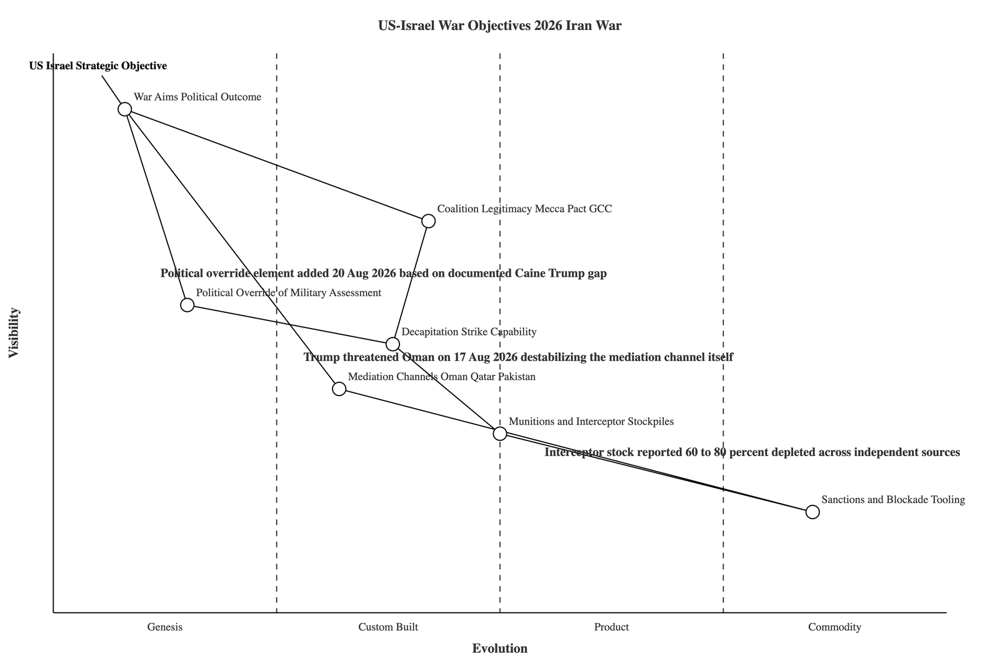
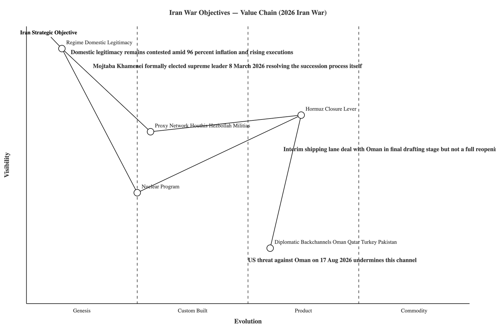
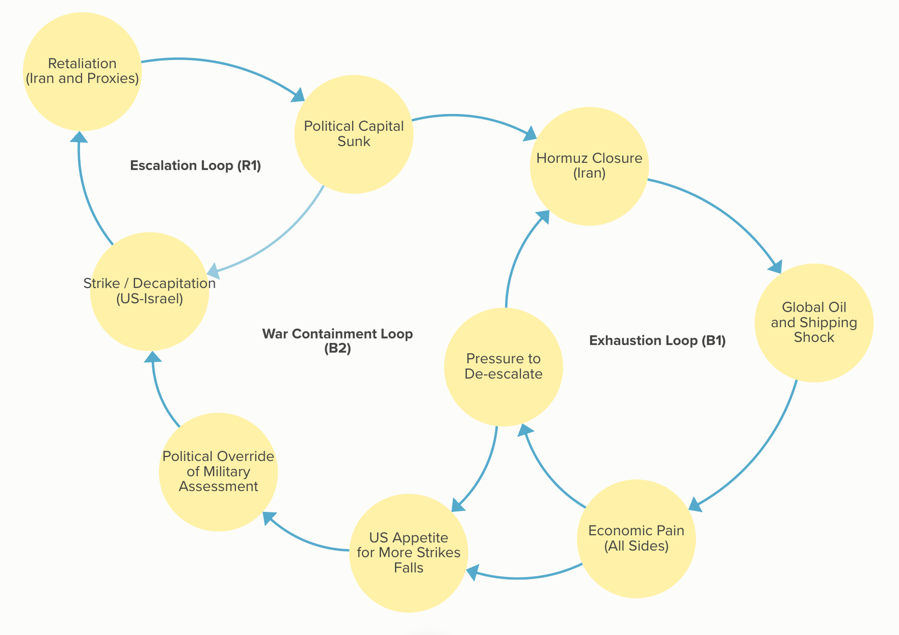

Five months on, exhaustion signals are building on the primary front — and being overridden rather than acted on
Since 28 February 2026, the United States and Israel have been at war with Iran and the network of state and non-state actors aligned with it. The war's negotiating track collapsed on 17 August rather than cooled, even as material and internal-military signals continue to point toward exhaustion on the primary front. This memo updates our 5 August assessment with the intervening two weeks of reporting.
Origins of the conflict
The war did not emerge without warning. It followed a lengthy deterioration in relations between Iran and the United States and its regional partners, marked by the collapse of nuclear diplomacy, an intensifying sanctions campaign, and a long-running, largely covert confrontation involving proxy forces and periodic direct strikes.
The open phase began on 28 February 2026, when the United States and Israel carried out a coordinated strike against Iran's senior leadership — killing the Supreme Leader, Ali Khamenei, and a substantial number of senior officials.[1] Iran responded within days with missile and drone strikes against Israel, against U.S. installations in the region, and against all six Gulf Cooperation Council states, immediately widening the conflict beyond its original participants, and moved to close the Strait of Hormuz.[1]
A one-week Interim Leadership Council governed Iran until the Assembly of Experts formally elected Mojtaba Khamenei, the second son of the slain leader, as the country's third Supreme Leader on 8 March 2026.[3][4] The selection was controversial inside Iran's own political and clerical establishment, which has historically opposed hereditary succession; his father is reported to have personally opposed the idea for years before his death.[5]
Principal actors: objectives, strengths, and vulnerabilities
The table below summarizes each principal actor's stated or reasonably inferred objectives, alongside the strengths and vulnerabilities most relevant to how the war has developed. Objectives attributed to state actors reflect public statements and are not independently verified.
| Actor | Core objective | Principal strengths | Principal vulnerabilities |
|---|---|---|---|
| United States | Prevent an Iranian nuclear breakout, degrade Iran's missile arsenal, restore secure Gulf oil flow, limit direct entanglement. | Unmatched precision-strike and air-defense capability; wide alliance and basing network; substantial economic leverage. | Documented depletion of interceptor stockpiles; limited domestic tolerance for a prolonged war; a private internal military assessment favoring de-escalation that has not translated into policy. |
| Israel | Durably degrade Iran's nuclear and missile programs; weaken the proxy forces arrayed against it. | Demonstrated long-range strike reach and deep intelligence penetration of Iran; sustained domestic consensus for continued action. | Dependent on U.S. resupply; exposed to multi-front proxy retaliation from Lebanon, Yemen, and Iraq. |
| Iran | Ensure regime survival, preserve nuclear and missile leverage, obtain sanctions relief, avoid formal capitulation. | Geographic control of the Strait of Hormuz; a dispersed, reconstitutable network of allied forces; reported willingness to shift to a "fully offensive" posture rather than negotiate under pressure. | Contested domestic legitimacy of the current leadership; an economy in acute distress; newly reported foreign resupply dependency (Russia). |
| Iran-aligned network (Houthi, Hezbollah, Iraqi militias) | Sustain pressure on Israel and Gulf states; preserve local political position. | Low-cost, high-disruption drone and missile capabilities; a degree of operational independence from Tehran. | Degraded by over a year of prior strikes; increasingly interdicted supply lines. |
| Gulf Arab states (led by Saudi Arabia) | Avoid becoming a primary battleground; protect oil infrastructure; hedge against uncertain U.S. staying power. | Substantial financial reserves; a newly signed mutual-defense pact with Turkey and Pakistan. | Direct exposure to Hormuz disruption and Houthi attack; the new pact's military obligations remain undefined and largely untested. |
| Regional mediators (Oman, Qatar, Turkey, Pakistan) | Prevent further escalation; preserve standing as indispensable intermediaries. | Trusted channels to both principal belligerents. | Limited coercive leverage; Oman itself was directly threatened by the U.S. president on 17 August, destabilizing the channel it provides. |
Current state of the conflict
The negotiating track broke down on 17 August rather than continuing to cool, reversing the trajectory this desk described in early August.
The Memorandum of Understanding signed 17 June — a 60-day framework to negotiate a permanent end to the war and reopen the Strait of Hormuz — expired on 17 August without an agreement.[2][16] President Trump rejected extending it, publicly called on Iran to "put up the white flag of surrender," and threatened to "bomb" Oman if it "gets in the way" of reopening the strait.[16][17] Iran's response was to signal a shift toward a "fully offensive" military posture under a "maximum deterrence" directive attributed to Mojtaba Khamenei.[17]
This followed an earlier collapse: an initial two-week ceasefire agreed on 8 April, mediated by Pakistan, broke down after Islamabad-hosted talks failed, prompting a U.S. naval blockade of Iranian ports.[2] A subsequent truce collapsed again on 6–7 July after Iran attacked commercial shipping in the strait attempting to enforce its own transit protocols; the U.S. resumed heavy airstrikes and Trump declared the ceasefire "officially over."[6]
The munitions story has firmed considerably since our last assessment. Independent analysis and multiple U.S. official statements now put Patriot interceptor stocks depleted by roughly two-thirds and THAAD inventories reduced by half to as much as 80 percent.[7][8] Joint Chiefs Chairman Gen. Dan Caine has raised the stockpile issue with the president directly in at least two recent meetings and is reported to be seeking an "off-ramp" from the war, judging that airpower alone cannot achieve the administration's stated objectives.[9] The White House disputes the characterization of a shortage but has not disputed the underlying figures.[10]
Separately, Saudi Arabia, Turkey, and Pakistan signed the Mecca Joint Defence Agreement on 7 August, a mutual-defense pact stipulating that an attack on one signatory is to be treated as an attack on all three.[11] It followed, by one day, a Houthi strike on Najran in southwestern Saudi Arabia that wounded eleven civilians.[12] Analysts describe the pact's practical military commitments as largely undefined and likely symbolic in the near term, with the Houthi threat its first live test.[13]
On the maritime track, Iran and Oman have reportedly agreed on coordinates for an interim shipping-lane arrangement through Hormuz, described by both sides as in its "final stages," but Iranian officials are explicit this is a traffic-management protocol, not a full reopening — that remains contingent on the U.S. honoring commitments Iran says were violated.[14][15]
In the days immediately preceding this update: a vessel transiting the strait was struck by an unidentified projectile on 18 August, with one crew casualty reported;[16] drones launched from Iranian territory struck the office of the Kurdistan Regional Government's prime minister in Erbil, Iraq;[16][17] and a European government document reportedly shows Russia shipping drone components and munitions to Iran via the Caspian Sea to help replenish its stockpiles.[17] On 19–20 August, Trump announced what he called "the most crushing economic operation ever taken against any country," and the United Arab Emirates independently suspended all trade and financial transactions with Iran.[18]
Inside Iran, the succession process itself is resolved and has been since March, but the legitimacy and durability of the current leadership remains genuinely contested — layered onto acute economic distress (96 percent point-to-point inflation, a poverty rate projected to rise from 41 to 45.5 percent by 2028) and a sharp rise in executions, including at least 444 between January and July.[16]
Casualty figures remain contested across sources and are compiled here as ranges rather than single figures. Cross-source tallies put total deaths across all fronts at roughly 7,100–9,700, with U.S. casualties officially at 18 killed and 757 wounded as of this update.[18][19][20]
Strategic positioning
To understand how each side's leverage is positioned relative to its stated goals, we array each side's principal assets and objectives along two dimensions: how directly and visibly each element bears on the political outcome, versus how far it sits within supporting infrastructure; and how settled or standardized each element has become as a tool of this war, versus how novel or contested it remains.

The most consequential shift since our last assessment is on the mediation channel itself. Coalition legitimacy has moved toward more established footing now that the Mecca Pact is a signed instrument, even if untested — but the U.S. president's direct threat against Oman on 17 August turns the mediator into a flashpoint rather than a stable, routinized channel, reversing its prior trajectory. A new element, the gap between the military's internal assessment and the political leadership's public posture, now sits on the map in its own right. Munitions stockpiles and sanctions tooling remain the most quantifiable, best-documented elements — and stockpiles remain the one nominally standardized military resource under genuinely acute strain.

On Iran's side, the succession process that dominated our earlier assessment is retired: Mojtaba Khamenei's election is a settled, if controversial, fact. In its place, regime domestic legitimacy is the more accurate and still-unresolved item — sitting in nearly the same position of high uncertainty that succession previously occupied, driven now by economic collapse and internal repression rather than by an open leadership question. The Hormuz closure lever continues to move toward a negotiated, transactional instrument. The nuclear program — the issue most frequently cited as the war's original cause — remains among the least-resolved, least-discussed elements on either map, a finding unchanged from five months ago.
Underlying dynamics
Positioning alone does not explain why the war has followed the course it has. Tracing how actions and their consequences cycle back on one another over time reveals why the conflict continues even when no single party may prefer, in isolation, that it do so.

Two cycles remain visible: a self-amplifying cycle connecting strikes, retaliation, and accumulated political capital that makes de-escalation costly for whichever side attempts it first; and a slower cycle connecting the Hormuz closure to global economic disruption, accumulated economic pain, and political pressure to de-escalate. Our previous assessment found that these two cycles join into a single larger loop that, in aggregate, constrains the escalatory cycle — but only indirectly, after passing through economic and diplomatic channels.
This has a further implication worth stating plainly: it suggests the war's trajectory is now less a function of material capacity — on the U.S. side, this is stretched but reportedly still sufficient to continue "under any plausible scenario" in the near term — and more a function of a single political decision-maker's tolerance for cost relative to a domestic narrative of resolve.[8] That is a harder variable to forecast against than a resource constraint.
Forward-looking scenarios
Consistent with our standing approach, we set out plausible, not mutually exclusive, trajectories rather than a single forecast, each with indicators to watch.
| Trajectory | Description | Leading indicators |
|---|---|---|
| 1. Delayed cooling (unresolved standoff) | The interim Hormuz shipping arrangement finalizes despite the MoU's expiry, and a narrower, unofficial de-escalation follows — an armistice-like state rather than resolution, with the nuclear and sanctions disputes left unaddressed. | Finalization and terms of the Oman shipping-lane deal; whether Trump's rhetoric softens after the "economic operation" announcement plays out; further reporting on Caine's position. |
| 2. Escalation override persists (political track diverges from material track) | The political leadership continues to override the military's exhaustion signal — sustaining strikes, threats against Oman, and new economic measures despite depleted stockpiles — producing a war that continues past the point its own material logic would predict. | Any actual strike on Oman or further threats against mediators; further denial of munitions shortages; continuation or escalation of the "crushing economic operation." |
| 3. Regional widening (Yemen–Gulf track) | Houthi attacks on Saudi Arabia intensify further, testing the Mecca Pact's undefined obligations and potentially drawing Turkey or Pakistan into direct involvement, independent of the primary U.S.–Iran track. | Frequency/severity of attacks on Saudi territory specifically; any formal invocation of the Mecca Pact; Turkish or Pakistani statements on obligations under it. |
| 4. Iran resupply changes the material balance (new variable) | Reported Russian resupply of Iranian drone components and munitions, if it continues or scales, could alter the exhaustion dynamic we previously modeled as one-sided — Iran's side of the attrition equation may not be depleting as assumed. | Further reporting on Caspian shipments; any visible increase in Iranian drone/missile production or attack tempo inconsistent with a depleted posture. |
Trajectories 2 and 4 are new since our 5 August assessment and represent the most significant revisions to our forecasting picture, not incremental updates to the prior three.
Conclusion
Nearly six months into the war, the clearest standing finding across both our original and updated assessments is unchanged: the nuclear program cited as the war's origin remains among its least-resolved, least-discussed elements, while nearly every surrounding element — leadership, coalitions, economic tooling, even the Hormuz chokepoint itself — has moved considerably. What has changed is our read of how this ends. We previously modeled a system with a working, if slow and indirect, brake on escalation. The past two weeks show that brake reaching the decision-maker and being overridden. Whether that override is a durable political choice or a temporary posture ahead of a face-saving deal is, at this writing, genuinely unclear — and we are not prepared to claim otherwise on the evidence available.
This memo draws on publicly available reporting as of 20 August 2026 concerning an active and rapidly evolving war. Facts attributed to sources reflect public reporting rather than this desk's independent verification. Positioning and dynamics diagrams combine sourced facts with our own analytical inferences regarding relationships between events; the latter are informed assessment, not established fact, and are flagged as such in the text where the distinction is load-bearing. Casualty and economic figures are contested across sources and are presented as ranges with the originating source noted. This is a dated snapshot, not a final account — readers with a specific decision or exposure at stake should seek updated, first-hand reporting.